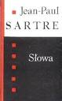

Słowa

Powieść wydana w 1964r.
Niekonwencjonalny pamiętnik opowiadający o wczesnych latach dzieciństwa. Sartre dość przekonująco analizuje kształtowanie swojej młodej osobowości, która rodziła się w dość niezwykłych warunkach. Bezlitośnie ukazuje fałsz i obłudę, którą dostrzega przez pryzmat własnych doświadczeń. Nie ogranicza się tylko do opisu kształtowania cech charakteru, lecz opisuje także swoje pierwsze próby literackie i zachwyty czytelnicze.